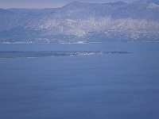

Sućuraj postoji već više od 2300 godina i kroz svoju povijest je više puta do temelja uništavan i ponovo obnavljan. Prvi poznati stanovnici Sućurja bili su Iliri, a njihova kraljica Teuta imala je u 3. stoljeću prije Krista ovdje svoj dvorac. U 7. i 8. st. Sućuraj su naselili Hrvati, koji u njemu žive do današnjih dana. Prvo je bio dijelom Neretvanske kneževine, a poslije je bio dijelom kraljevine Dalmatinske Hrvatske. Kroz povijest u Sućurju su se mijenjali razni gospodari i razne države: Iliri, Rimljani, Hrvati, Mlečani, Francuzi, Austrijanci, Talijani... Samo u 20. stoljeću Sućuraj je bio u 6 različitih država. Najstarija dobro sačuvana građevina u Sućurju je stari augustinski (danas franjevački samostan). Kada je točno sagrađen, nije poznato, ali se zna da je prvi put obnavljan 1309., a posljednji put 1994. godine. Sućuraj je dobio ime po crkvi sv. Jurja koju spominje Hvarski statut iz 1331. god. (ta crkva je srušena krajem 19. st., kada je napravljena nova). Velik broj stanovnika u Sućuraj dolazi s primorja u 15. stoljeću bježeći pred Turcima. Iz tog vremena do danas je sačuvana barokna crkva sv. Ante iz 1663. godine. Djelomično je sačuvana i stara venecijanska tvrđava ("fortica") iz 1613. godine. U Sućurju se nalazi i spomenik pisan hrvatskom ćirilicom, postavljen 1655.. Sućuraj je bio jednim od najjačih uporišta antifašizma na otoku Hvaru, jer su brojni tamošnji mještani otišli u partizane, odnosno pomagali iste.